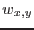
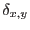

Images necessarily have sharp boundaries at their edges, and may in addition have sharp internal steps between zero- and non-zero-valued pixels. Such steps become `smeared out' through the convolution. Smearing manifests itself as both `drooping' of non-zero values as the edge is approached and `bleeding' of non-zero values into the previously zero-valued area. A glance at equation 1 shows that drooping can be avoided by supplying as weight image (parameters withweightset and weightset) something which exhibits the same steps as the input image. Where this is the case, both numerator and denominator of equation 1 fall to approximately half their usual values at pixels adjacent to an image step to zero; if no weight image is supplied, all values of  are set to 1, and thus only the numerator of 1 falls by about half at such pixels, so also the result as a whole. An exposure map often serves very well as a weight image. This can also prevent large noise fluctuations in areas of low exposure when the input image is exposure-corrected before smoothing (see section 3.5).
Droop correction by weighting carries on in principle even outside the area of the input image which was non-zero-valued. This facility can be used to interpolate over gaps or holes in the input and weight images. However such extrapolation becomes increasingly noisy far from the step as fewer and fewer non-zero pixels of the input and weight images overlap the convolver. Indeed such extrapolation cannot extend further than the convolver array dimensions from non-zero areas of the weight image, else the denominator of equation 1 would become zero.
This extrapolation can be controlled by supplying asmooth with a mask image via parameters withoutmaskset and outmaskset. The mask actually has two effects: only pixels for which the mask is TRUE contribute to the convolution; and convolution is only performed for pixels for which the mask is TRUE. In fact we should rewrite equation 1 to read
where  represents the mask.
Note from section 7 that the image supplied to outmask may have any numeric data type. The exposure map for example is often a convenient choice.
If the absolute value of the numerator of equation 1 falls below a certain minimum value, the task will do the following: (i) issue the warning outMaskTooNarrow; (ii) set the value of that pixel in the outset to zero; (iii) set the respective pixel of an internal logical image to TRUE. This logical image of pixels where weighted smoothing could not be carried out can be written to file by setting writebadmaskset=`yes'.
An example of a situation in which a small amount of controlled extrapolation is desirable is in the creation of background maps by smoothing. Bright sources should be removed from any image before smoothing it to create such a map. However if pixels in the neighbourhood of sources are simply set to zero, smoothing won't remove the resulting holes in the image, just blur them. The surrounding background values can be interpolated into the holes by supplying a weight image (eg the exposure map) with a matching set of holes. Provided the holes do not approach the convolver array dimensions in size, the holes should become completely filled in. Note that if a mask is also used, the mask should not have holes cut in it at the source positions. In total, the recommended procedure is as follows:
asmooth inset=<cheesed input image> withweightset=yes weightset=<cheesed weight image> withoutmaskset=yes outmaskset=<original exposure map>
If you still get the `outMaskTooNarrow' warning, you will either have to reduce the size of some of the holes or use a broader convolver.
Note that, although the exposure map is recommended for three separate inputs of asmooth (weightset, outmaskset and expimageset), these three functions are separate and should not be confused.